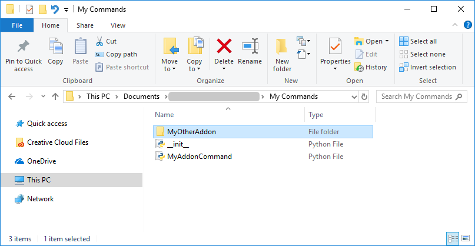

This template can help you quickly develop and localize your Python add-on. You can download the files here. Remember to put the files in the My Commands folder of your application's documents. As follows are sections that briefly explain each file and its use.
An initialization file (__init__.py) is used to register your add-on with the application and define its location in the user interface. You can, of course, develop an add-on that runs in the background and listens for events.
| '''
template for add-on that uses contextual tab group, ribbon tab and group a contextual tab group requires a command that defines when to show or hide it ''' from vcApplication import * def OnAppInitialized(): cmduri = getApplicationPath() + "ShowContextualRibbonTab.py" cmd = loadCommand("ShowContextualRibbonTab",cmduri) cmduri2 = getApplicationPath() + "printHelloLocalized.py" cmd = loadCommand("printHelloLocalized",cmduri2) iconPath = getCommandPath() + "Hello.svg" localize = findCommand("netCommand") localize.execute("SetLocalizationCommand", "English", "Python", "printHelloLocalized", "Icon", iconPath) localize.execute("SetLocalizationCommand", "English", "Python", "NewRibbonGroup", "Icon", iconPath) #Step 1: First add Ribbon Contextual tab group. Id is the id of the group which Ribbon tab created in step 2 is going to associate. addMenuItem(UxSite = 'pyContextTabGroup',UxName = "PythonExtraContextTab", Index = -1, Id = "pyContextTabGroup",Parent="gmAction",ControlType="ContextualTabGroup",BaseBackColor="#ff1985") #ssisss #Step 2: Add Ribbon Tab and associated it with Contextual ribbon group.The Parent attribute is to set the Contextual tab group. Id of Ribbon tab is the id it is used to be identified. addMenuItem(UxSite = "pyContextTabGroup/TabHeader", UxName="1st Tab", Index = -1, Id = "TabHeader",Parent="pyContextTabGroup", ControlType="RibbonTab") # now you can add ribbon items in this addMenuItem('pyContextTabGroup/TabHeader/NewRibbonGroup', "R Group" , -1, "printHelloLocalized" , "","","","") |
Important: If you are placing your add-on in a gallery menu that is not defined by the initialization (INI) file of your add-on, the files of your add-on must be in a child folder of the INI file defining the menu. For example, the INI file of your add-on might reference a gallery menu before it is created when initializing the application. This rule does not apply to gallery menus defined by the application.
Example. __init__ file defines gallery menu that is referenced by __init__ file in child folder

A command file defines the functionality of your add-on. Your add-on can have one or more command files. Generally, a command has at least one state that occurs when you execute the command. You have the option of extending a command by adding properties, using pre/post-execution events, showing message boxes, and executing a command with the help of a task pane/action panel.
| '''
template for command executed in action panel/task pane you can see how to localize: message box command property command property with step values command property grouped in tab other than default ''' from vcCommand import * app = getApplication() cmd = getCommand() def showMessage(prop): title = app.getLocalizedString("Python","MsgBoxTitle","Text") #1st way message = app.getLocalizedString("ComboKey::Python.MsgBoxMessage.Text") #2nd way retval = app.messageBox(message,#message text title, #Title iconValues['Information'], #icon buttonValues['YesNoCancel'], #button 0, #default result "yep!", #yesbutton "no...", #nobutton "idk") #cancelbutton prop1 = cmd.createProperty(VC_BUTTON,"btnPropName") prop1.OnChanged = showMessage prop2 = cmd.createProperty(VC_STRING,"ColorPropName",VC_PROPERTY_STEP) prop2.StepValues = ["red","green","blue"] prop2.Value = prop2.StepValues[0] prop3 = cmd.createProperty(VC_BOOLEAN,"Advanced::togglePropName") prop3.Value = False def state(): executeInActionPanel() cmd.addState(state) returnValues = {0 : 'None', 1 : 'OK', 2 : 'Cancel', 6 : 'Yes', 7 : 'No'} buttonValues = { 'OK' : 0, 'OKCancel': 1, 'YesNoCancel' : 3, 'YesNo' : 4} iconValues = { 'None' : 0, 'Error': 16, 'Question' : 32, 'Warning' : 48, 'Information' : 64} |
In some cases, another command file is needed to show or hide your add-on or disable it.
| #example on how to show/hide contextual tab group
#in this case, the command runs in background as event handler from vcCommand import * app = getApplication() cmd = getCommand() def ShowOrHideCustomRibbonTab(): if app.CurrentContext.Id == "Drawing": app.setContextualTabGroup("pyContextTabGroup",False) print "Your custom pyContextTabGroup is hidden in " + app.CurrentContext.Id + "context" elif app.CurrentContext.Id == "Teach": app.setContextualTabGroup("pyContextTabGroup",True) print "Your custom pyContextTabGroup is shown in " + app.CurrentContext.Id + "context" else: app.setContextualTabGroup("pyContextTabGroup",True) print "Your custom pyContextTabGroup is shown in " + app.CurrentContext.Id + "context" app.OnContextChanged = ShowOrHideCustomRibbonTab |
An SVG file can be used as an icon for your add-on. You can either create your own or reference the ones used by the application. For example, in the program files of the application you will find an Icons folder. In that case, the Icons folder can be a working directory, so you could pass a relative path, for example "rUndo.svg", instead of an absolute path. In any case, an SVG file must have a <path> tag with a 'd' attribute to be rendered in the user interface.
| <?xml version="1.0" encoding="utf-8"?>
<!-- Generator: Adobe Illustrator 19.0.0, SVG Export Plug-In . SVG Version: 6.00 Build 0) --> <svg version="1.1" id="Layer_1" xmlns="http://www.w3.org/2000/svg" xmlns:xlink="http://www.w3.org/1999/xlink" x="0px" y="0px" viewBox="0 0 16 16" enable-background="new 0 0 16 16" xml:space="preserve"> <g id="XMLID_20_"> <path id="XMLID_79_" fill="#393939" d="M10.912,3v1.623L9.403,6.34L8.808,7.016l0.611,0.662L11,9.391V11H5V9.377L6.509,7.66L7.09,7 l-0.58-0.66L5,4.623V3H10.912 M11.912,2H4v3l1.758,2L4,9v3h8V9l-1.846-2l1.758-2V2L11.912,2z M16,13H0v1h16V13L16,13z"/> </g> <path id="XMLID_25_" fill="#FAA519" d="M5.45,11l2.2-4l-1.2-2h3l-1,2l2.1,4H5.45z"/> <g id="XMLID_26_"> </g> <g id="XMLID_28_"> </g> <g id="XMLID_29_"> </g> <g id="XMLID_30_"> </g> <g id="XMLID_31_"> </g> <g id="XMLID_32_"> </g> </svg> |
Tip: The hex color of #393939 can be used to contrast the Light and Dark themes of the application. The color is white when using Dark theme and black when using Light theme.
A resource file allows you to localize your add-on for languages supported by the application. A resource file uses key-value pairs that define localized strings. These key-value pairs are then merged with other resource files to create a one large dictionary for the application. In this case, the localized strings are added from Python not .NET. When localizing your add-on, make sure to reference keys not values. A key is then used to get localized text based on the active language of the application. To create and use a resource file, name it "PyResource.<language>" and save it with a .xaml file extension.
| <ResourceDictionary xmlns="http://schemas.microsoft.com/winfx/2006/xaml/presentation"
xmlns:x="http://schemas.microsoft.com/winfx/2006/xaml" xmlns:s="clr-namespace:System;assembly=mscorlib"> <!-- for ribbon button/command --> <s:String x:Key="ComboKey::Python.printHelloLocalized.Text">Print Hello(in English)</s:String> <s:String x:Key="ComboKey::Python.printHelloLocalized.Tooltip">Print hello World in message panel(in English)</s:String> <s:String x:Key="ComboKey::Python.printHelloLocalized.Icon">rUndo.svg</s:String> <!-- for ribbon group --> <s:String x:Key="ComboKey::Python.NewRibbonGroup.Text">Localized Group (in English)</s:String> <s:String x:Key="ComboKey::Python.NewRibbonGroup.Tooltip">Contains localized button(in English)</s:String> <!-- for ribbon context tab and tab group --> <s:String x:Key="ComboKey::Python.TabHeader.Text">English Tab</s:String> <s:String x:Key="ComboKey::Python.pyContextTabGroup.Text">English</s:String> <!-- for message box --> <s:String x:Key="ComboKey::Python.MsgBoxTitle.Text">Hello (in English)</s:String> <s:String x:Key="ComboKey::Python.MsgBoxMessage.Text">I am localized Message in English</s:String> <!-- for properties in content panel --> <s:String x:Key="ComboKey::Python.printHelloLocalized.btnPropName.Name">Button (in English)</s:String> <s:String x:Key="ComboKey::Python.printHelloLocalized.ColorPropName.Name">Color (in English)</s:String> <s:String x:Key="ComboKey::Python.printHelloLocalized.Advanced::togglePropName.Name">Toogle (in English)</s:String> <!-- for step values --> <s:String x:Key="ComboKey::Python.printHelloLocalized.ColorPropName.red">Red (in English)</s:String> <s:String x:Key="ComboKey::Python.printHelloLocalized.ColorPropName.blue">Blue (in English)</s:String> <s:String x:Key="ComboKey::Python.printHelloLocalized.ColorPropName.green">Green (in English)</s:String> </ResourceDictionary> |
Note: You do have the option of localizing your add-on by using the netCommand to call the SetLocalizationCommand in .NET API. However, a resource file is easier to manage, share and edit. It has also been shown that the application performs better when a Python add-on uses resource files.